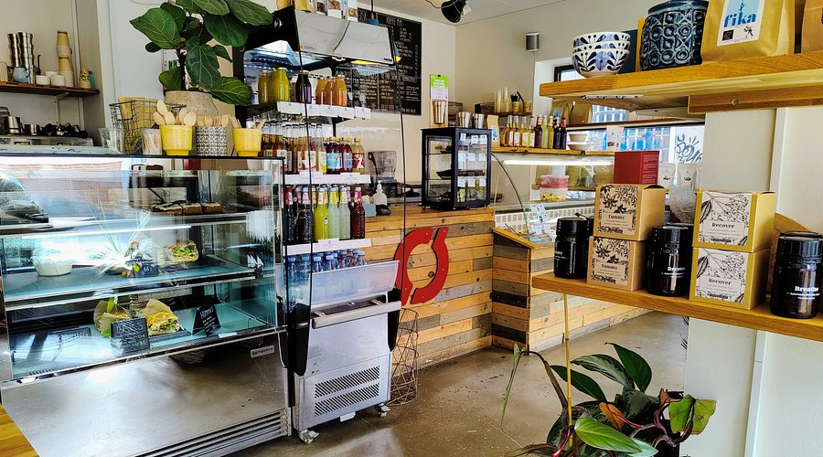
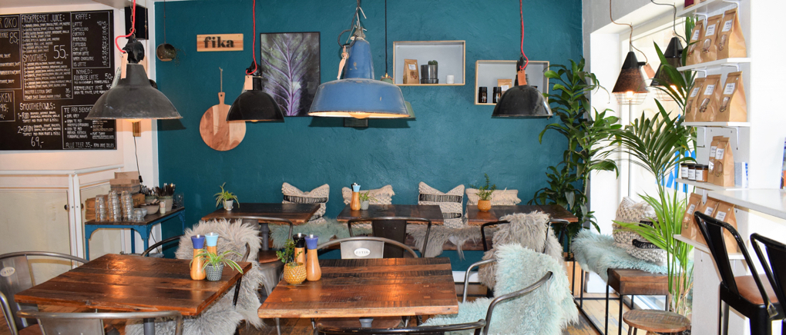
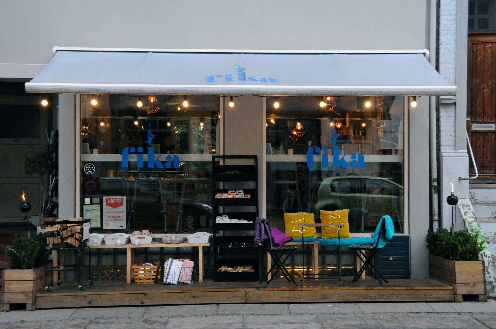
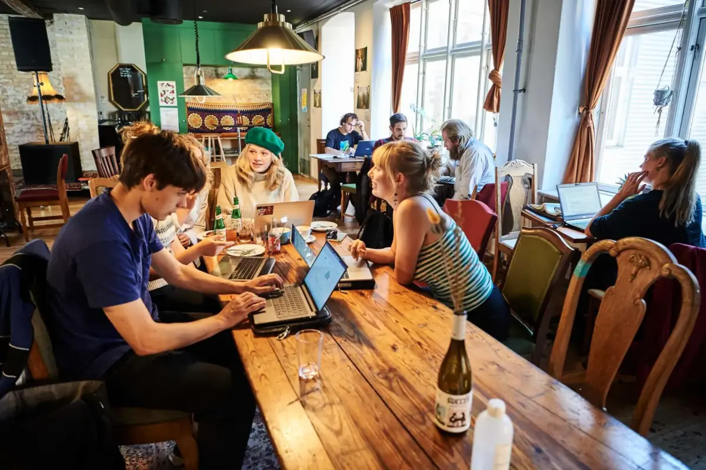
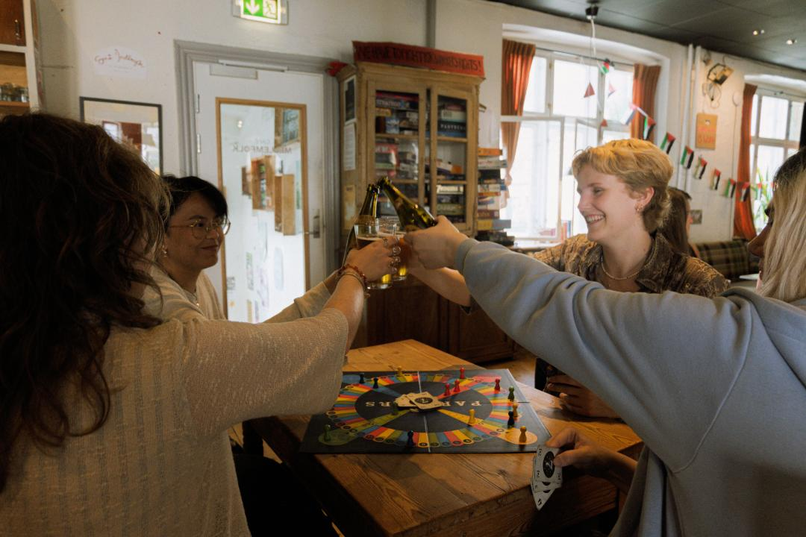
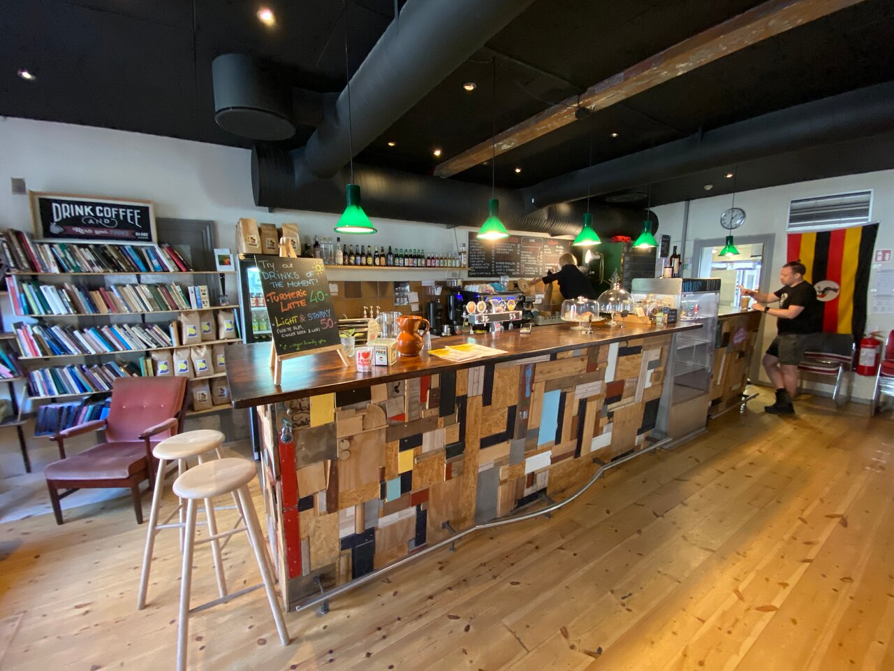
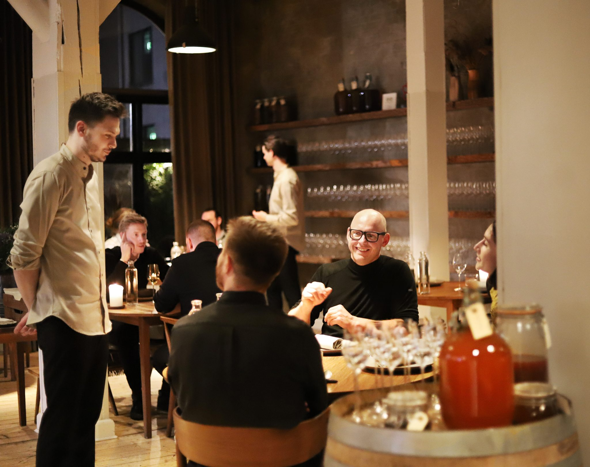
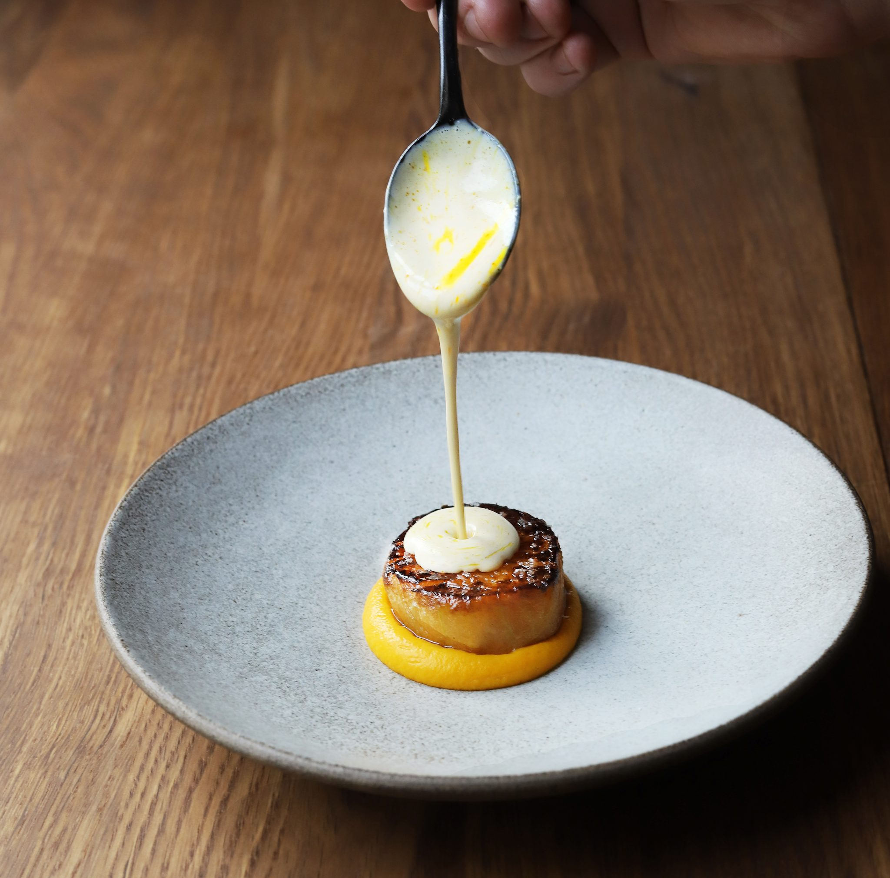
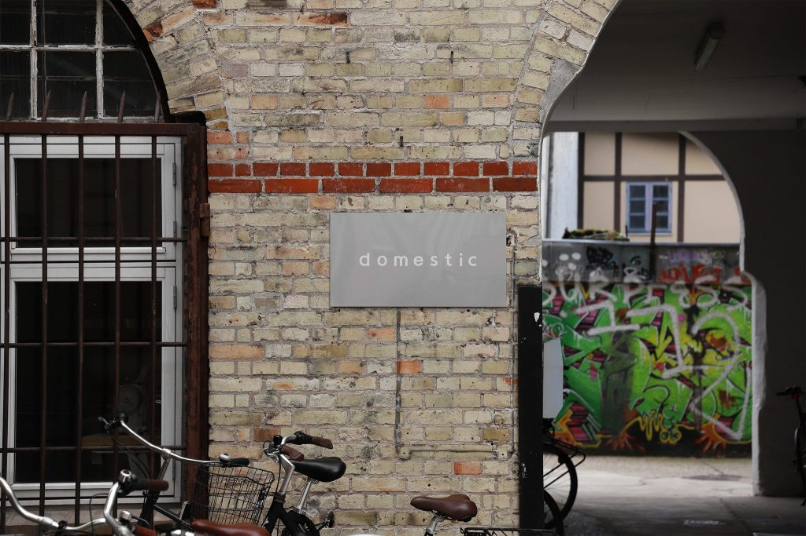

Grünes Aarhus
Restauranten
1. Café Fika ⭐ 4.6



Café Fika
Jægergårdsgade
- Alles auf der Speisekarte ist bio, und das Café hat das Bio-Siegel in Gold.
- Es wird auf die Umwelt geachtet: zum Beispiel durch biologisch abbaubare Verpackungen für Take-away.
- Gut für: einen entspannten Brunch oder Mittagessen mit nachhaltigem Profil.
2. Café Mellemfolk ⭐ 4.7



Café Mellemfolk
Mejlgade 53
- Frivillig betrieben – alle Gewinne gehen an soziale & nachhaltige Projekte
- Fairtrade-Kaffee & 100 % vegane Speisen
- Verwendet biologisch abbaubare Verpackungen
- Fördert soziale Nachhaltigkeit – nicht nur Umwelt, sondern auch Gemeinschaft
- Treffpunkt für Aktivisten, Studierende & nachhaltig Denkende
Gut für: ein Café mit Herz – sozial, fair und grün.
3. Restaurant Domestic ⭐ 4.8



Restaurant Domestic
Mejlgade 35B
- Gourmetrestaurant mit 100 % dänischen & saisonalen Zutaten
- Kein Import – keine Zitronen, Vanille oder exotische Gewürze
- Michelin „Green Star“ für Nachhaltigkeit
- Arbeitet direkt mit lokalen Bauern & Fischern zusammen
- Minimale Abfallpolitik – alles wird verwertet
- Dänische Weine & Getränke aus lokaler Produktion
Gut für: ein nachhaltiges Fine-Dining-Erlebnis der Extraklasse.
Too Good To Go
Was es ist:
- Too Good To Go ist eine dänische App gegen Lebensmittelverschwendung
- Cafés, Restaurants, Bäckereien & Supermärkte verkaufen überschüssige Ware günstig vor Ladenschluss
- Du kaufst eine „Glückstüte“ – Inhalt ist Überraschung, aber immer frisch!
- Rettet täglich Tonnen von essbarem Essen vor dem Müll

Warum es nachhaltig ist:
- Reduziert Lebensmittelverschwendung:
Über 1/3 aller Lebensmittel wird global weggeworfen
TGTG rettet den frischen Teil
- Spart Ressourcen:
Weniger CO₂ durch Produktion, Transport & Landwirtschaft
- Unterstützt lokale Geschäfte:
Cafés verdienen statt wegzuwerfen
- Kreislaufwirtschaft:
Überschuss bekommt neuen Wert
- Über 150 Millionen Mahlzeiten gerettet (weltweit)
- Kooperiert mit über 200.000 Partnern in 17 Ländern
Mehr auf ihrer
Website
oder lade die App herunter!